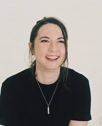

Here is a list of the most viewed shows (ready-to-wear) on Vogue Runway that you might want to pay attention to. 1. Nensi Dojaka 2. Christian Dior 3. Chanel 4. Bottega Veneta 5. Balenciaga 6. Saint Laurent 7. Prada 8. Louis Vuitton 9. Valentino 10. Dolce & Gabbana
- Designer of this month: Nensi Dojaka -
Nensi Dojeka has become a favorite of many celebrities over the last year. She was awarded at a star-studded ceremony in Paris of the Albanian women’s wear designer which is the recipient of the 2021 LVMH Prize for Young Designers. Dojaka, who is based in London, is a graduate of Central Saint Martins where she launched her namesake label in 2017. She received her bachelor’s and master’s degrees from the university. During her studies, she interned for designer brands like Peter Pilotto and Fyodor Golan. After showing her graduate collection two years later, she created a capsule collection with Ssense and was selected to show as part of the emerging designer support platform, Fashion East.
